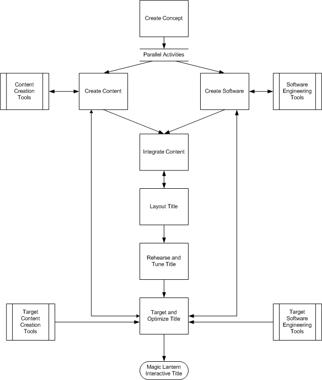

Figure 1.2.1 shows the title development process using the Magic Lantern Authoring System.

Figure 1.2.1: Title Development Process with Magic Lantern
Magic Lantern offers tools that support the following tasks:
Content creators can easily integrate diverse content elements into their
title using the Magic Lantern
supported data types. Magic Lantern supports files in multimedia formats for
3D models, geometry,
animation, 2D images, sound, and video. Magic Lantern offers very tight integration
with common
multimedia formats.
Supported file formats include:
The performance capabilities of current PC and UNIX platforms in conjunction
with the Magic Lantern
architectural structure lend speed to prototyping and efficient title development.
Programmers can build
upon the support libraries to prototype title objects and save them to the DWP.
This means that Magic
Lantern prototypes are not "disposable" efforts that have to be thrown
out when title development begins in
earnest. Successful prototypes become the basis of the final title and can be
continuously improved.
The Magic Lantern Authoring Tools make it easier for every member of the title
development team to do
title layout and tuning. The Scene Editor is used for composing interactive
worlds, navigating through
scenes, manipulating the objects in the scenes, and creating the DWP. Throughout
the development process,
titles-in-progress can be quickly viewed in the Rehearsal Player window and
edited on the fly to test new
ideas. This allows non-programming team members to interactively view and revise
artwork, scene layout,
and actor properties without assistance from the programming team.
The Magic Lantern Rehearsal Player can be attached to a debugger so that the
title can be run during the
debugging process. Targeted players can be tethered to platform-specific simulators
to test and debug a title in context of the
constraints implied by that platform. For example, an OCAP player can be tested
using an OCAP simulator.
The Magic Lantern targeting and optimization tools generate the auxiliary
runtime data structures that
accompany the title code for a specific target. This facilitates iterative testing
and optimization of the title on
the target platform. Title developers can target the title, test the performance,
and then, when necessary,
write code to optimize performance for the different targets. The Magic Lantern
targeting tools make it more
efficient to test the title at the earliest stages with the target audience
and iteratively modify the title
throughout development.
Magic Lantern is being designed from the outset to be an easily extensible
system. This allows title
developers to use the Authoring Framework API to incorporate their own specialized
tools into the system.